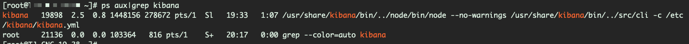

linux里面以指定用户运行命令
一、chroot方式¶
1 2 3 4 | [root@localhost ~]# chroot --userspec "nginx:nginx" "/" sh -c "whoami" nginx [root@localhost ~]# chroot --userspec "kibana:kibana" "/" sh -c "whoami" kibana |
以kibana用户启动kibana示例：
1 | chroot --userspec "kibana:kibana" "/" sh -c "/usr/share/kibana/bin/kibana -c /etc/kibana/kibana.yml" >> /var/log/kibana/kibana.stdout 2>> /var/log/kibana/kibana.stderr & |
1 2 3 4 5 6 7 | # Run the program! chroot --userspec "$user":"$group" "$chroot" sh -c " cd \"$chdir\" exec \"$program\" $args " >> /var/log/kibana/kibana.stdout 2>> /var/log/kibana/kibana.stderr & |

二、daemon函数形式¶
参考https://stackoverflow.com/questions/17956151/how-to-run-a-command-as-a-specific-user-in-an-init-script
On RHEL systems, the /etc/rc.d/init.d/functions script is intended to provide similar to what you want. If you source that at the top of your init script, all of it's functions become available.
The specific function provided to help with this is
daemon. If you are intending to use it to start a daemon-like program, a simple usage would be:
If that is too heavy-handed for what you need, there is
runuser(seeman runuserfor full info; some versions may need-uprior to the username):
/sbin/runuser username -s /bin/bash -c "command(s) to run as user username"
elasticsearch启动脚本示例：
1 2 3 4 5 6 7 8 9 10 11 12 13 14 15 | # # Source function library. # if [ -f /etc/rc.d/init.d/functions ]; then . /etc/rc.d/init.d/functions fi cd $ES_HOME echo -n $"Starting $prog: " # if not running, start it up here, usually something like "daemon $exec" daemon --user elasticsearch --pidfile $pidfile $exec -p $pidfile -d retval=$? echo [ $retval -eq 0 ] && touch $lockfile return $retval |